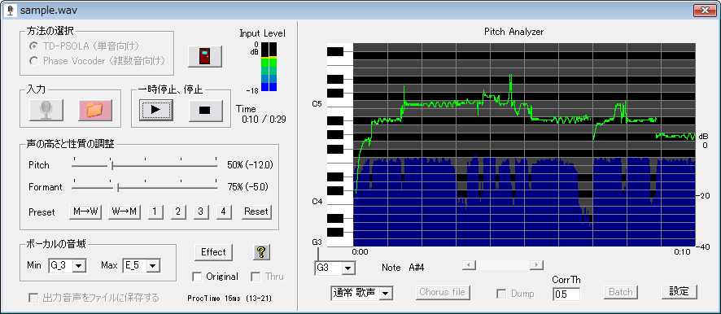

概要 TD-PSOLA画面 Phase Vocoder画面 Sound Effect画面 設定画面 問題と対策
「恋声」のTD-PSOLA選択時の表示画面

【使い方１ 〜マイク入力の場合〜】
まず、PCにマイクとヘッドフォンを装着して下さい。
次に、Windowsのマイクの設定を行って下さい。（最初はWindowsの設定です。「恋声」はまだ起動しません。）
(WindowsXPの場合）
・録音コントロールを開いて、マイクの選択をチェックする。（マイクの表示がない場合にはオプション→プロパティ→録音で、マイクにチェックを入れる）
・上の画面にあるボリュームのコントロールは、「恋声」を実行後にボリューム調整のために使用するので下の作業が終わったらまた開いておく。
・再生コントロールを開いて、入力モニタのミュートにチェックを入れる。（入力モニタの表示がない場合にはオプション→プロパティ→再生で、入力モニタにチェックを入れる）
・この状態でマイクに向かって話した声がヘッドフォンから聴こえないことを確認して下さい。（聴こえたらミュートがされていない）
(WindowsVistaの場合）
・録音デバイスのプロパティで、マイクを既定値に設定する（マイクの表示がない場合には右クリックをして無効なデバイスの表示および切断されているデバイスの表示にチェックを入れて下さい。）
・上の画面にあるボリュームのコントロールは、「恋声」を実行後にボリューム調整のために使用するので下の作業が終わったらまた開いておく。
・再生デバイス→スピーカー→プロパティ→レベルを選択して、マイクをミュートする（スピーカーのアイコンをクリックするとミュートのアイコンに変わる）
・この状態でマイクに向かって話した声がヘッドフォンから聴こえないことを確認して下さい。（聴こえたらミュートがされていない）
(以下、XP/Vista共通）
次に、koigoe.exeをダブルクリックして「恋声」を起動します。
「方式の選択」で、TD-PSOLAを選択して下さい。
次に「入力」の欄の中の「マイクのアイコンのボタン」を押して下さい。この状態でマイクに話した声が一瞬の時間遅れてヘッドフォンから聴こえるはずです。レベルメーターが表示されていますので、緑から黄色の範囲になるようにWindowsの録音のボリュームを調整して下さい。
もし音声が聴こえなかったら、STOPボタンを押した後にThruにチェックを入れて再度マイクのボタンを押して下さい。Thruでもマイクからの声が聴こえない場合は、Windowsの録音デバイスの設定が正しくないと思われます。
音声が正しく聴こえたら、、男性の場合は「M→W」、女性の場合は「W→M」のボタンを押して下さい。これで男声から女声へ、あるいは女声から男声に変わるはずです。「M→W」「W→M」のボタンではピッチを２倍、フォルマントを1.4倍に変化させます。これ以外の値にする場合には、PitchあるいはFormantのスライダーを動かして調節して下さい。
マイクボタンを押す前に「出力音声をファイルに保存する」のチェックを入れておくと、ピッチ変換したwavデータを同時に保存します。保存先は「設定」で指定したフォルダで、ファイル名はsave_xxxx.wavです。xxxxの所は、0000から9999までの数字が入ります。安全を考慮して、容量が100MB(20分)を超えたら保存を自動的に終了します。
【使い方２ 〜ファイル入力の場合〜】
「入力」の欄の中の「ファイルのアイコンのボタン」を押して下さい。ファイルを聞いてきますので、再生するwavファイルを指定して下さい。「恋声」単独で読み込めるwavファイルの形式は、44.1kHz,
16bit のみです。しかし、EcoDecoTooLがインストールされている場合には、任意の形式のwavファイル、およびmp3/mp4/aac/flv等のEcoDecoTooLが変換できるすべてのファイル形式を使用することができます。詳しくこちら参照。ファイルのドラッグ＆ドロップにも対応しているので、ファイルをドラッグして「恋声」のウィンドウにドロップしても再生できます。
マイク入力時と同様に、「M→W」あるいは「W→M」あるいはPitch,
Formantのスライダを調整して音質を調整して下さい。
事前に「出力音声をファイルに保存する」のチェックを入れておくと、ピッチ変換したwavデータを同時に保存します。保存先は「設定」で指定したフォルダで、ファイル名は「元のファイル名＋_xx.wav」です。xxの所は、01から99までの数字が入ります。
【声の高さと性質の調整】
ピッチ(Pitch)は声の高さのことです。100% (0)
が元の声の高さです。右に動かすと高くなり、左に動かすと低くなります。%表示は周波数が元の何%になっているかを示します。()の中の数字は半音を1とした時の変化量で、+1は半音高く、-1は半音低いことを示しています。
フォルマント(Formant)は声の性質のことです。100% (0)
が元のフォルマントです。右に動かすとフォルマント周波数が上がり女声的、幼児的になります。左に動かすと男声的、モンスター声的になります。%表示はフォルマント周波数が元の何%になっているかを示します。()の中の数字は半音を1とした時の変化量で、+1は半音高く、-1は半音低いことを示しています。
【Preset】
「M→W」を押すと、標準的な男声から女声への変換の設定値が入ります。
「W→M」を押すと、標準的な女声から男声への変換の設定値が入ります。
「Reset」のボタンをクリックすると、男声、女声両方をカバーする変換の標準的な設定値が入ります。
数字の「1」〜「4」のボタンをCtrlキーを押しながらマウスでクリックすると、現在の以下の値を保存します。
・ Pitch
・ Formant
・ ボーカル音域Min
・ ボーカル音域Max
・ Pitch Analyzerの表示下限音
・ Corr thresh
次回からは、「1」〜「4」のボタンをマウスでクリックするだけで、保存した内容に設定できます。
【ボーカルの音域の設定】
入力する音声のピッチの下限と上限を指定します。入力ピッチはこの範囲内であると仮定しますので、範囲外のピッチが入力されると別のピッチと誤認されますので注意して下さい。
ボーカルの音域の設定は非常に重要です。変換がうまくいかない場合には、この値を変えて試してみてください。
【Corr threshの設定】
これは、初期値の0.5のままで、あまりいじる必要はありません。
【Pitch Analyzer】
TD-PSOLA選択時に、TD-PSOLAが検出したピッチを緑色のグラフで表示します。停止後にスクロールバーを動かすことにより、すべての時間のピッチを見ることができます。表示は約７分間が限度で、これを過ぎると「Buffer
full」の表示が出て止まります。表示が止まってもピッチ変換は続けて行っています。
「設定」で音量表示にチェックが入っている場合には同時に青色で音量を表示します。
【Dump機能】
「Dump」のチェックボックスにチェックを入れておくと、「恋声」が解析したピッチをテキストファイルとして保存します。保存先は「設定」で指定したフォルダで、ファイル名はdump_xxxx.txtです。xxxxの所は、0000から9999までの数字が入ります。
【Chorus file】
Dump機能で出力したファイルを編集してコーラスの音を指定することができます。例えば、Chorusの欄に-5と書き込むと、完全５度下の音を重ねて出力します。数字は元の音から半音でいくつ離れているかです。負の場合には下の音を、正の場合には上の音を重ねます。値の範囲は-64〜64で小数の入力も可能です。このようにして記述したファイルを「Chorus
file」のボタンを押して指定します。ファイルの編集にはExcelを使うと楽です。（0は同じ音を重ねます。127と入力すると音を重ねません。） コーラスファイルの記述のについては、末尾の補足参照。
【ThruとOriginal】
Thruは、処理を行わないで入力をそのまま出力します。
Originalは、処理は普通に行っているが入力と同じ音声を出力します。変換音声と入力音声を聴き比べたり、ピッチ解析・周波数解析結果だけを見るのに使えます。
【バッチ処理】
「Batch」のボタンを押すと、音声出力を行わないで変換だけを行います。結果は、「設定」で指定したフォルダに、save_xxxx.wavというファイル名で保存されます。xxxxの所は、0000から9999までの数字が入ります。このバッチ処理では「設定」で指定した数(1,2,4)のオーバーサンプリングを行って処理を行います。また、wavファイル全体でピッチ／フォルマント変換を行います。この２つの理由により、「恋声」の中で最も精度の高い変換が行われます。（但し、時間が掛かる、大きなファイルを扱おうとするとメモリ不足のエラーが発生する、といったことがあります。）
「平坦化」および「Dump」はバッチ処理と組み合わせて使用することができます。
「平坦化」と「Dump」の両方のチェックが入っている場合には、Dumpファイル内のコーラス値に平坦化を行う値が入ります。
【方式選定・特殊効果】
歌声
この方式では、ピッチ変換の正確さを優先します。まれに入出力のデータ数にずれが発生して、以前の音が部分的に混入して聞こえる等の問題が発生する場合があります。その場合は、一度停止のボタンを押して再びマイクのボタンを押して下さい。
話声
この方式では、変換前後のデータ数をその都度一致させます。だから「歌声」のような破綻は起きません。しかし、変換後の音程が正確ではなく音痴のように聞こえる場合があります。話し声なら音程のずれは問題にならないでしょう。原因が分かっていませんが、「話声」でも音声が途切れる場合があります。その場合は、一度停止のボタンを押して再びマイクのボタンを押して下さい。
３度上を重ねる
長三度上の音を重ねて出力します。一人で歌っているのに、二人でコーラスしているように聴こえます。
平坦化
常に一定のピッチで出力します。一定となるピッチは、ピッチのスライダーが
100% (0) の場合にボーカル音域の中央のピッチになります。
ピッチとフォルマントのスライダーを動かして、声の性質を変えることもできます。
ピッチのスライダーを動かすと、一定となるピッチも変化します。
正弦波
検出したピッチと音量に基づいて正弦波で音声を出力します。
方形波
検出したピッチと音量に基づいて方形波で音声を出力します。
鋸波
検出したピッチと音量に基づいて鋸波で音声を出力します。
--- 補足 ---
Chorus fileのフォーマット
| koigoe | 2.72 | |||||
| Input | sample.wav | |||||
| OverSampling | 1 | |||||
| A4 | 440 | |||||
| MinKey | G_3 | 19 | ||||
| MaxKey | E_5 | 40 | ||||
| CorrThresh | 0.5 | |||||
| PitchShiftEnable | 1 | 0:オリジナルの音声を使用（ピッチ変更不可） 1:ピッチ変更可 | ||||
| MixingLevel_Original | 1.0 | オリジナル音声のレベル（1.0は入力と同じレベル） | ||||
| MixingLevel_Chorus | 0.5 | コーラス音声のレベル | ||||
| Samples | Time | MaxAmp | Hz | Note | Chorus | |
| 0 | 0:00.000 | 0 | 0 | 0 | -5 | 完全５度下 |
| 441 | 0:00.010 | 9 | 100 | 0 | -5 | 完全５度下 |
| 882 | 0:00.020 | 12 | 100 | 0 | -5 | 完全５度下 |
注意： 上表で青字以外の値は絶対に修正しないこと。
・Chorus値は小数値でも記述することができます。（例：
-0.25 これは半音の1/4だけ下げることを意味します）
・OverSamplingが4の場合には、Samplesの値は実際のWAVファイルのデータの4倍になります。
・「平坦化」のチェックが入っている場合には、
Samples Time MaxAmp Hz Note Chorus(F_4)
のように表示されます。Chorus(F_4) のF_4は、F_4に平坦化されるChorus値であることを示します。この値(F_4)は「恋声」で設定したボーカルの最低音と最高音の中央の音です。